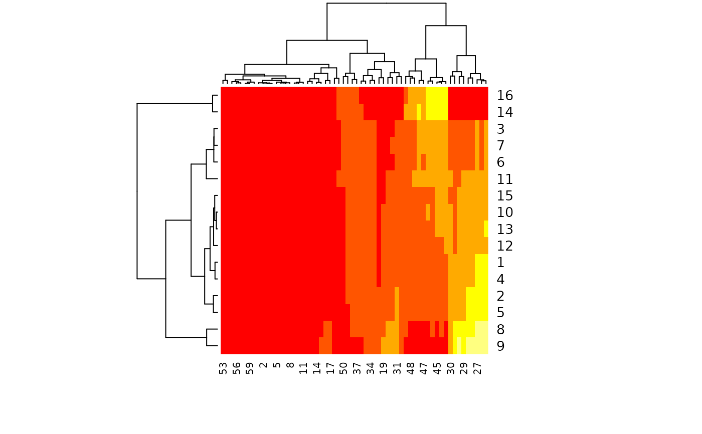
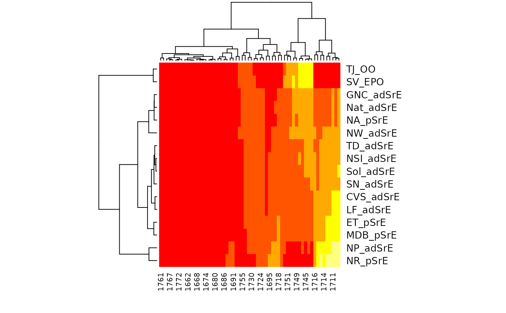

Creates a heat map with marginal dendrograms using seriation procedures.
Heirchical cluster analysis is followed by re-ordering the clusters in a coordinated way
across each dimension (controlled by argument method, see hmap).
The vignette for package seriation has more details.
hmapSpectra(spectra, ...)
Arguments
| spectra | An object of S3 class |
|---|---|
| ... | Additional arguments to be passed downstream. A great deal of
control is available - check |
Value
A list as described in hmap. Side effect is a plot.
Note
The underlying heatmap.2 function does certain things automatically for the user.
For instance, if you pass a vector of names to argument labRow it is automatically
reordered using the rowInd vector that is computed. The user does not need to
do the reordering. Another example is the labeling of the columns. The labels are
automatically turned 90 degrees, and not every column is labeled to keep things readible.
Interpretation
Looking at the 2nd hmapSpectra example, and keeping in mind the nature of the sample
(see SrE.IR), the most similar samples based on the ester peaks (~1740), are in
the lower right corner of the heatmap. These are the two outlier samples, composed of triglycerides
which contain the ester functional group (and no detectable carboxylic acid). The most similar
samples based on the carboxylic acid peaks (~1710) are in the upper left corner. These samples are
mostly from the "pure" extract group, according to the manufacturer's label. These samples have a modest
to low amount of the ester functional group, which indicates dilution (or adulteration if you like).
In fact, the first two samples (NP_adSrE and NR_pSrE) are the two samples with the smallest ester
peaks (see first plot in the examples). This suggests that NP_adSrE was diluted only a little with added
olive oil.
See also
hmap which will get you to the package
(there is no package index page); the vignette is a good place to begin
(browseVignettes("seriation")). Additional documentation at
https://bryanhanson.github.io/ChemoSpec/
Author
Bryan A. Hanson, DePauw University.
Examples
data(SrE.IR) # Let's look just at the carbonyl region IR <- removeFreq(SrE.IR, rem.freq = SrE.IR$freq > 1775 | SrE.IR$freq < 1660) plotSpectra(IR, which = 1:16, lab.pos = 1800)# Label samples and frequencies by passing arguments to heatmap.2 # Also make a few other nice plot adjustments res <- hmapSpectra(IR, col = heat.colors(5), labRow = IR$names, labCol = as.character(round(IR$freq)), margins = c(4, 6), key.title = "" )